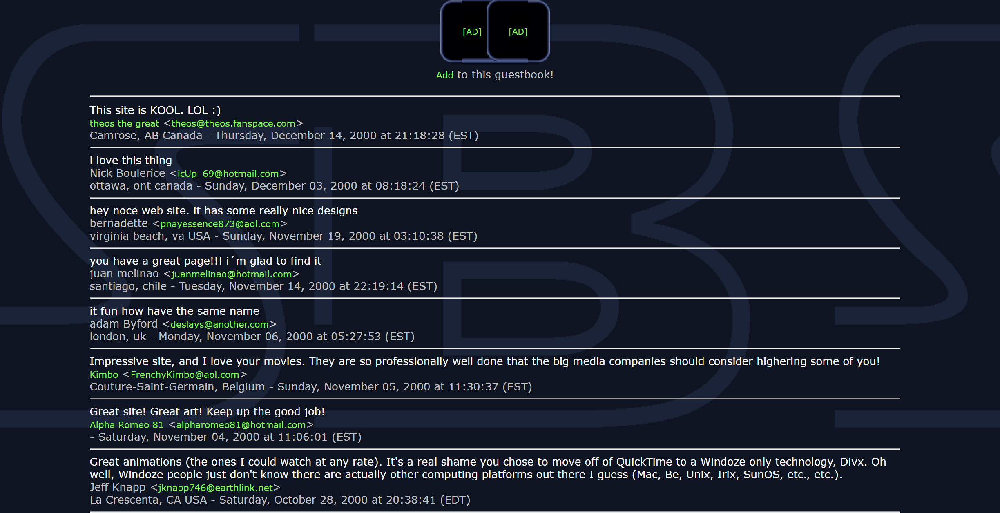
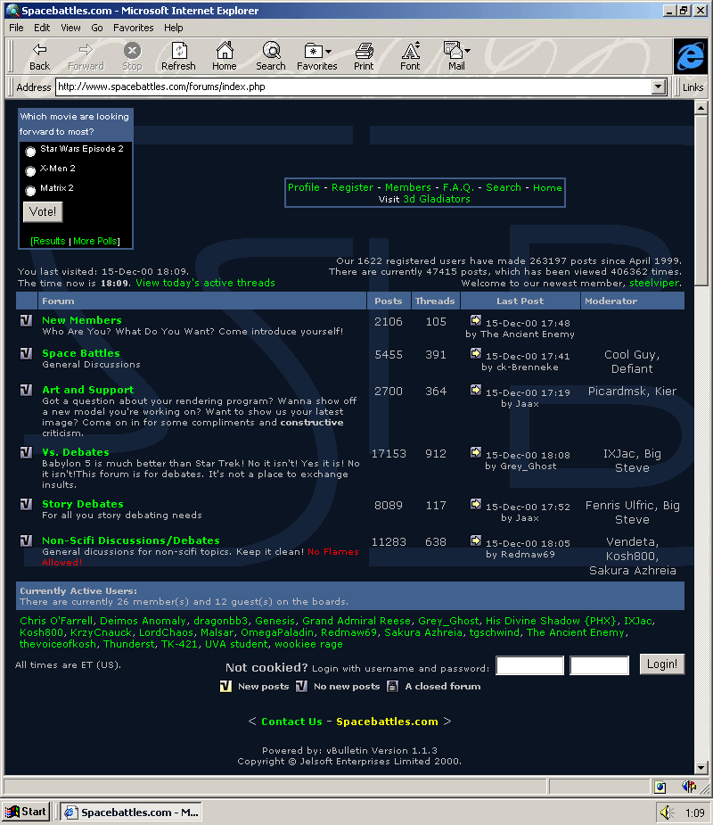
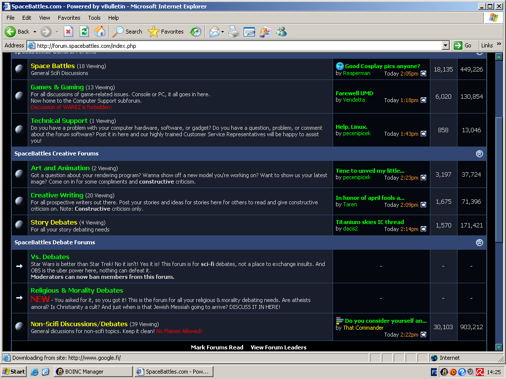
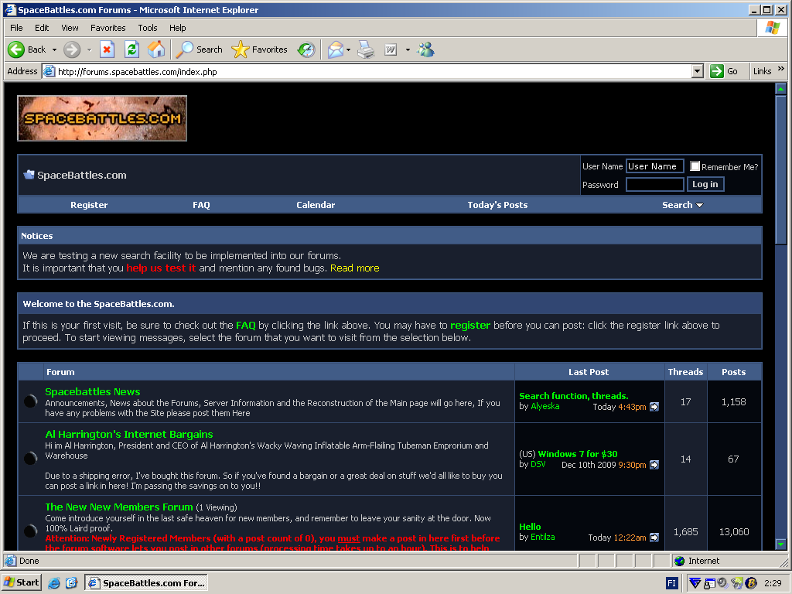
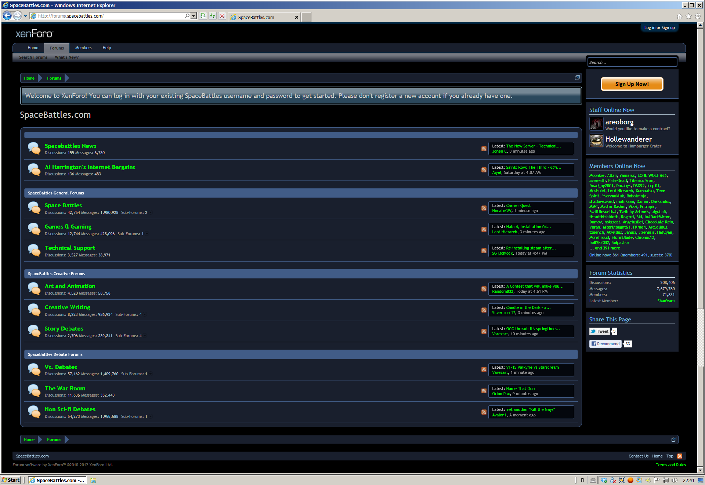

SPACEBATTLES Preview
SPACEBATTLES Preview
Explore the evolution of our community and the events that have shaped it. The images shown are the most prominent periods that defined the website for what it is today.
1996 |
The website began as a forum to share sci-fi movie download links to others while also providing a space for discussion.  |
|---|---|
2000 |
Spacebattles transitioned to vBulletin forum software, providing a more established community platform. New sections, including the New Members and Story Debates forums, were introduced.  |
2006 |
The software was upgraded to vBulletin 3.6.0, introducing features such as multiquote. New sections, including Original Fiction, were also established.  |
2010 |
Several new sections were introduced that expanded the forum's coverage beyond traditional science-fiction discussions into writing and roleplaying communities.  |
2012 |
The forum migrated from vBulletin to XenForo on May 1, 2012. This introduced a new forum interface and updated community features.  |
2015 |
SpaceBattles continued improving its infrastructure and forum functionality. Threadmarking was also introduced, helping readers navigate lengthy discussions and organize threads. |